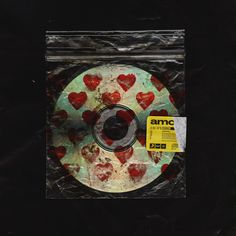
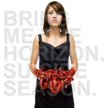
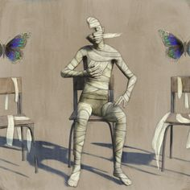
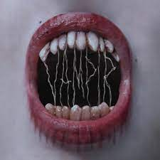

.jpg)
do you know about "bring me the horizon"?, lets find out!
adalah grup musik rock Inggris yang dibentuk di Sheffield pada tahun 2004. Saat ini grup ini digawangi vokalis Oliver Sykes, gitaris Lee Malia, bassis Matt Kean, drummer Matt Nicholls, dan kibordis Jordan Fish. Saat ini mereka berada di bawah kontrak dengan RCA Records secara global dan Columbia Records secara eksklusif di Amerika Serikat.
Pendiri BMTH diyakini berasal dari latar belakang musikal yang berbeda-beda dalam metal dan rock. Matt Nicholls dan Oliver Sykes memiliki ketertarikan terhadap musik metalcore Amerika seperti grup musik Norma Jean dan Skycamefalling, dan banyak menghadiri acara hardcore punk lokal. Mereka berjumpa dengan Lee Malia, yang turut membicarakan thrash metal dan grup-grup musik death metal melodis seperti Metallica dan At the Gates; Malia bahkan turut serta sebagai anggota grup musik tribute-to Metallica sebelum berjumpa dengan keduanya. Bring Me the Horizon resmi dibentuk pada Maret 2004, ketika para anggotanya berusia 15 hingga 17 tahun. Curtis Ward, yang juga tinggal di daerah Rotherham, bergabung dengan Sykes sebagai vokalis, Malia sebagai gitaris, dan Nicholls sebagai drummer. Bassis Matt Kean, yang juga pernah menggawangi band-band lokal lainnya, melengkapi formasi tersebut. Nama grup musik ini dikutip dari film Pirates of the Caribbean: The Curse of the Black Pearl, yang pada kutipan filmnya Kapten Jack Sparrow mengatakan, "Now, bring me that horizon." Pertama kali mereka tampil pada tanggal 15 April 2004, di The Charter Arms di Rotherham, Inggris.
| NO. | Title | Play |
| 1. | Doomed |
|
| 2. | Happy Song |
|
| 3. | Throne |
|
| 4. | True Friends |
|
| 5. | Drown |
|
| 6. | Oh No |
|
| 7. | Run |
|
| 8. | Blasphemy |
|
| 9. | Follow You |
|
| 10. | What You Need |
|
| 11. | Avalanche |
| NO. | Title | Play |
| 1. | Can you feel my heart by Bring Me The Horizon.jpeg) |
|
| 2. | Shadow Moses |
|
| 3. | Empire (let them sing) |
|
| 4. | House Of Wolves |
|
| 5. | Sleepwalking |
|
| 6. | Go to hell, for heaven's seek |
|
| 7. | Antivist |
|
| 8. | And the snake start to sing |
|
| 9. | Crooked Young |
|
| 10. | Hospital for soul |
|
| 11. | Seen it all before |
|
| 12. | Join the club |
| NO. | Title | Play |
| 1. | Kingslayer |
|
| 2. | Ludens |
|
| 3. | 1x1 |
|
| 4. | Parasite Eve |
|
| 5. | Teardrops |
| NO. | Title | Play |
| 1. | MANTRA  |
|
| 2. | In the dark |
|
| 3. | Medicine |
|
| 4. | Sugar Honey ice & tea |
|
| 5. | Wonderful Life |
|
| 6. | Mother Tongue |
| NO. | Title | Play |
| 1. | Chelsea smile  |
|
| 2. | Diamonds Aren't Forever |
|
| 3. | Sleep With One Eye Open |
|
| 4. | The Sadness Will Never End |
| NO. | Title | Play |
| 1. | Strangers  |
|
| 2. | Sleepwalking |
|
| 3. | Go To Hell, For Heaven's sake |
|
| 4. | 1x1 |
|
| 5. | Fallout |
| Strangers |
| VAMPIR  |
| Die4u |
| No More Friends |
"Made with heart"-Keane